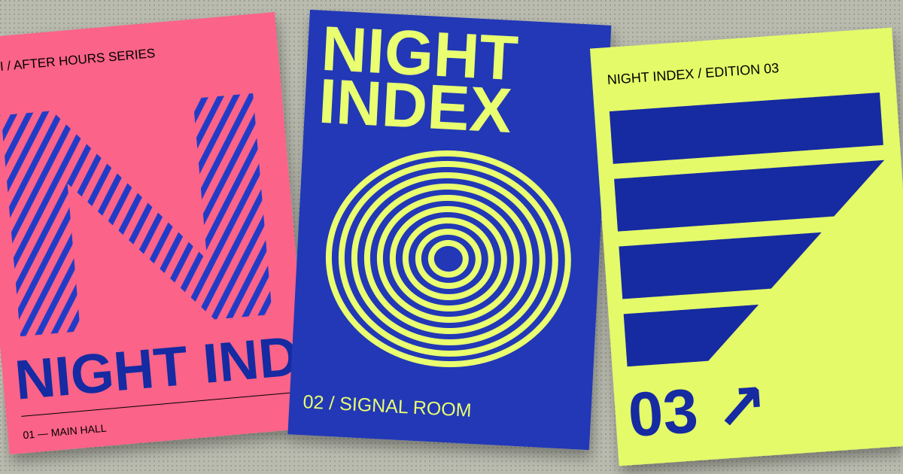

Naming
Shortlists tested aloud, on signage and in a URL.
Identities and campaigns for people who put on shows, press records and open doors.
Selected project ↓
A late-night music festival needed a mark that could hold its own on a crowded wall. We built a two-ink identity around one stretched letterform, then took it from street posters to a pocket guide.
The cobalt bar stays fixed; the accent ink changes by stage. Large numerals work across the street, while the compact date block can be lifted intact into a social post. Three poster variants form this concept campaign.
Shortlists tested aloud, on signage and in a URL.
A mark, type palette and rules for putting them to work.
A visual through-line for every campaign touchpoint.
Posters and wayfinding designed to be read on the move.
Editable layouts your team can use after launch.